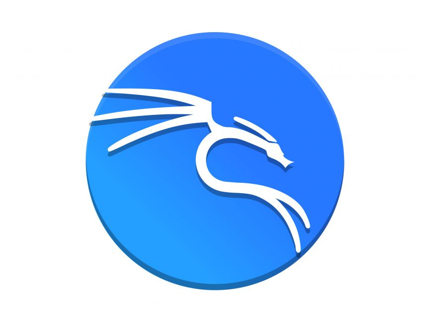

Kali Linux:

Nem preciso dizer nada né? O Kali é um dos favoritos de muitos para quem estuda hacking ético
e o motivo é porque ele foi feito justamente para isso, para testes de penetração, o Kali é baseado
em Debian e bem ele foi feito especificamente para hacking ético, no caso testes de penetração, explorar
vulnerabilidades e etc, tanto que ele já vem com ferramentas hacking instaladas, entretanto, não recomendo
usar pro dia-a-dia.
Informações principais:
Gerenciador de pacotes: APT (Advanced Package Tool)
Filosofia: Segurança e aprendizado ético
Modelo: Rolling release
Dificuldade: Alta
Vantagens:
1) Ferramentas de segurança pré-instaladas.
2) Baseado em Debian (No caso é confiável e relativamente estável).
3) Rolling release.
4) Ideal para aprendizado de segurança cibernética e hacking ético.
Desvantagens:
1) Não é para uso diário.
2) Alta curva de aprendizado (No caso você deve saber o que está fazenod).
3) Por ser voltado para pentesting, pode ser perigoso se usar sem cuidado (No caso você pode cometer
um crime sem querer).
4) Algumas ferramentas podem ser ilegais se usada fora de contexto ético (Exemplo: Usar o sqlmap
para invadir um banco de dados).